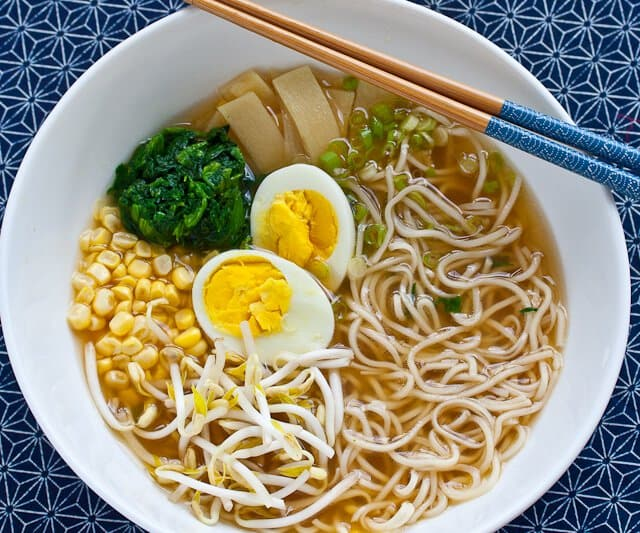

Miso Ramen!

This Miso Ramen Recipe serves up a deliciously
flavored broth with a mix of toppings such as egg and corn.
This bowl of
Miso Ramen is going to satisfy your cravings and you can make in less than 30 minutes!
Ingredient list!
- 1 egg
- 2 tablespoons soy sauces
- 1/2 teaspoon sugar
- 1/4 cup sliced bamboo shoots
- 1 package miso ramen I prefer Nissin RAOH
- 1 handful fresh baby spinach leaves
- 3 slices Japanese fish cake kamaboko
- 3 tablespoons canned corn
- 1 stalk green onion sliced or chopped
- 2 pieces roasted seaweed nori
How To Make This Miso Ramen Recipe - Step By Step!
- In a small saucepan, add 1-inch of water. Place steamer basket inside the pan and bring water to a boil. Add the egg to the steamer basket, cover with lid and set timer for 8 minutes.
- In meantime, in a small bowl, stir the soy sauce and sugar together. Add in the bamboo shoots and mix well. Set aside.
- Empty the ramen soup seasoning package contents to a serving bowl.
- Bring another saucepan with 2 cups of water to a boil. Add in the dried noodles and cook for 4 minutes. When noodles are just about ready, add in the spinach leaves and stir. The spinach only takes a few seconds to cook. Ladle in the hot water from the saucepan into the serving bowl with soup seasoning. Stir well to dissolve the soup seasoning. Use chopsticks to add in the cooked noodles and spinach to the bowl.
- When the egg is done cooking, drain and rinse egg with cool water. Peel egg and slice in half. Serve miso ramen with egg, bamboo shoots, fish cake, corn, green onion and seaweed.
Main Menu